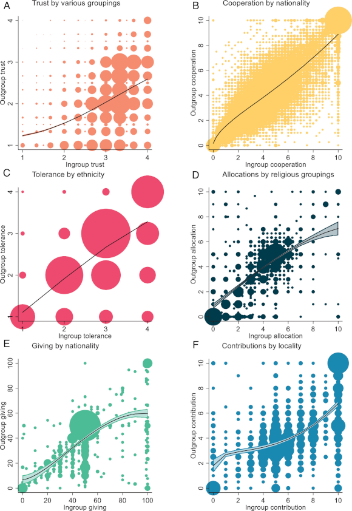

The Athletes Data Community Newsletter is a weekly update on data collection, management, and reporting advances related to athletics. Brad Stenger produces the ADCN. He is a PhD student at the University of Vermont who researches athletes’ data sharing and privacy.
Can We Have an “Us” If There Is No “Them”
The Arizona State men’s hockey team started its season this weekend. The player who was hospitalized after a team-building workout at the start of team training remains on life support. The team’s head coach has been placed on leave, but the rest of the coaching staff is still around.
Details came out in a letter to the media from seven unnamed players who want the coach and assistant coaches who witnessed the workout to be replaced. They fear retribution from a group of coaches who bullied players (or at least witnessed a workout instructor bullying players) in that early-season workout. There may well be a pattern of bullying players if retribution is a characteristic behavior of these coaches.
Bullying is an effective method for drawing lines between who’s in and who’s out when it comes to the team’s group dynamic. Coaches have lots of tools at their disposal to organize and motivate. I won’t say that bullying or actions leading up to bullying are absolutely right or wrong. Coaches have executive authority, and universities pay them (not me) to make decisions.
Scientific consensus has been that every collective “us” needs a “them” in order to exist, but the issue is far from settled. Wharton School professor Adam Grant called studying “us without a them” the most important question in organizational psychology on the podcast he hosts with Brené Brown.

New research tested the premise that ingroup affection goes hand-in-hand with outgroup hate by asking whether ingroup prosociality (behaviors that benefit others) demonstrates less or more outgroup prosociality. The authors point out that most research asks subjects to choose to interact with one or the other, ingroup or outgroup, precluding outgroup prosociality. They found that people are slightly more prosocial toward their ingroup than the outgroup. And they found those who are prosocial toward the ingroup also tend to be prosocial toward the outgroup.
Another podcast (podcasts are not the best sources—apologies) where host Simon Austin interviewed Ben Ryan, the performance director at Brentford soccer club. Ryan had previously coached the Fiji sevens rugby squad to an unexpected 2016 Rio de Janeiro Olympics gold medal. The Fiji team had a culture that prioritized “everyone looks out for everyone,” according to Ryan.
Grant and Brown hypothesized with show guest, author John Green, that humans’ instinct to belong is at the center of sports community-building effectiveness. The player-team dynamic is one thing. The fan-team dynamic is another.
Harvard researchers Todd Rogers, Audrey Feldman, and Ben Valenta recently penned an opinion article at The New York Times, “We Surveyed 50,674 Americans. This Is What Brings Them Together.” What brings Americans together is sports. It “might be the last remaining American cultural institution that spans our political divides,” they write.
The authors found that “every fan base in Major League Baseball, the National Football League, and top college football programs remains politically diverse.” People from all walks cheer together, rooting for their team, win or lose. And the group identity exceeds individuals’ other social group identities.
Bullying remains a problem in youth sports. Research shows that education can improve the situation, but even when education programs are resourced, communities do not always value opportunities to participate.
Why does this ingroup-outgroup stuff matter for athletes’ data?
Athletes in team competition based on performance data can fuel ingroup-outgroup divisiveness. Social comparison is a central tenet of Social Identity Theory, and the things used to evaluate ingroup versus outgroup status are arbitrary, so basing perceived superiority on numbers (lifting stats, body composition, time on task, etc.) has ample precedent.
The opportunity exists to be prosocial in the intra-team context. The everyone-for-everyone scenario suggests widespread sharing among teammates can benefit the entire team, but it is a tough ask. Too much information is a real thing, as is too much conformity.
The better lens for prosocial sharing of athletes’ data is probably with regard to fan interest and support. The better the sports entertainment product, the better the fan experience. To the extent that teams or individuals withhold data and impose a lower ceiling on competition entertainment, that seems selfish.
Athletes’ Data Collection Technologies Rundown
The annual Body Sensor Networks conference starts on October 10 in Portugal. It is affiliated with the IEEE Engineering in Medicine and Biology Society, and it is the leading inter-disciplinary research conference for wearable sensing and health applications. The conference has a large footprint in athletics-related work. (Track 2 is “Sensors and systems for digital health, wellness, and athletics.”) US university bioengineering research labs are well-represented.
OpenReview.net has the complete conference proceedings. What jumps out (to me) is the number of application-specific sensors that have athletic utility:
Toward Personalized UV Monitoring: A Solar Geometry–Informed Wearable UV Index Sensing Approach, University of Utah
Recovering the spatiotemporal dynamics of stomach muscle coupling during digestion using wearable high-resolution electrogastrography, University of California-Berkeley
A Unified Evaluation of Tooth Segmentation Models and Diffusion-Based Synthetic Data Augmentation in Panoramic Dental Radiographs, University of Central Florida
Shifting from Cycle-Based Segmentation to Continuous Object Detection in Lung Sound Analysis, INESC TEC Portugal
The Thermal Gap in Transcutaneous Oxygen Sensing: A Dynamic FEM Approach, Michigan State University
Multi-modal sensors and interfaces also got my attention:
Functional markers of fatigue in persons with and without multiple sclerosis using wearables, University of Illinois
Development of a Wearable Multi-Sensor Platform for Sweat pH Monitoring Using Smart Textiles, Universita degli Studi de Bergamo Italy
Data Integration from Body Sensor Networks for Internal Joint Action Prediction at Standard MVJ, INESC TEC
Wireless TTL Triggering over BLE: Towards High-Precision Synchronization in Multimodal Wireless Body Sensor Networks, INESC TEC and Carnegie Mellon University
Towards a miniaturized wearable neuromuscular interface for human-machine interaction, Istituto Italiano di Tecnologia Italy
Development of a flexible wearable patch for electrochemical sensing of sweat analytes, University of California-Irvine
Continuous Noninvasive Wearable Multi-spectral Optical Sensor for Multi-Biomarker Research, University of Virginia
More sensor links from other sources:
An ultrathin semiconductor that conducts electricity using positively charged ‘holes’ might clear the way for next-generation electronic devices. in Bluesky, Nature on October 1, 2026
Real-Time Prediction of Lower-Limb Joint Kinematics, Kinetics, and Ground Reaction Force Using Wearable Sensors and Machine Learning in Sensors (Basel) by Josee Mallah et al. on September 16, 2026
On-Skin Wearable Health Monitoring Devices: Recent Trends and Perspectives in Sensors (Basel) by Francisco Romero et al. on September 10, 2026
Laser Tech Can Spot Disease in Body Odor in Photonics Spectra on September 30, 2026
News
What are the foundations of the #USMNT youth movement? I took a look in Bluesky by Charles Boehm on October 2, 2026
Are we seeing more NFL quarterback injuries than normal this season? in ESPN.com by Bill Barnwell on October 1, 2026
Today FIFA have released the FIFA World Cup 2026™ Post-Tournament Technical Report. in Bluesky by John Muller, Rob Suddaby on October 2, 2026
Wellness Project Launches Healthspan, Turning Everyday Health Data Into a Clearer Picture of Long-Term Health in Wellness Project Newsroom press release on September 22, 2026
A new special issue of Science highlights the research that is seeking to close the critical gaps in women’s health. in Bluesky, Science Magazine on October 1, 2026
Can AI replace human coaches? in Bluesky by Svexa on October 1, 2026
With new developments in research, football is reckoning with CTE in The Daily Tar Heel student newspaper by Amy Snively on September 30, 2026
Fact Check: Can football ever be safe? in The Brown Daily Herald student newspaper by Angel Lopez and Ivy Huang on September 28, 2026
Points from victory in justinxzhao.com by Justin Zhao on September 30, 2026
Injury, Workload, and the Strategic Response of Coaches in the NBA in National Bureau of Economic Research nber.com by Kala Krishna, Sergey Lychagin, Lewis McLean on September 30, 2026
Can your running data predict an injury before it happens? in Canadian Running magazine by Keeley Milne on September 29, 2026
We’re delighted to welcome the Emory Human Performance Institute, led by Professor Greg Myer to our Innovation Hub network. in Bluesky by Wu Tsai Human Performance Alliance on September 24, 2026
Garmin Acquires Moxy, and Garmin Gets Sued in DC Rainmaker by Ray Maker on September 28, 2026
Should I Stay or Should I Go Now? A Case Study of Contrasting International Travel Strategies and NFL Performance in SportRxiv by Jason Dude, Tanya Halliday, Christopher Depner on September 28, 2026
Who’s really No. 1? Rice statisticians build better way to make sense of competing sports rankings in Rice University News and Media Relations by Alexandra Becker on September 28, 2026
Inside Look at Basketball Technology (and the transformation of the game) in Profluence Sports by Andrew Petcash on October 1, 2026
Talking to NBC News about Major League Baseball and How the Owners are Wrong about a Salary Cap (again!) in Substack, Wages of Wins newsletter by David Berri on September 30, 2026
University to work with FIFA to advance football health research in University of Liverpool News on September 22, 2026
Oxygen in a can, cryoptherapy therapy chambers and k-tape… how football is being duped by pseudoscience. in Bluesky by Sam Cunningham on September 22, 2026